Making a complex live-chat workspace more accessible, usable, and consistent through research-led interface redesign.
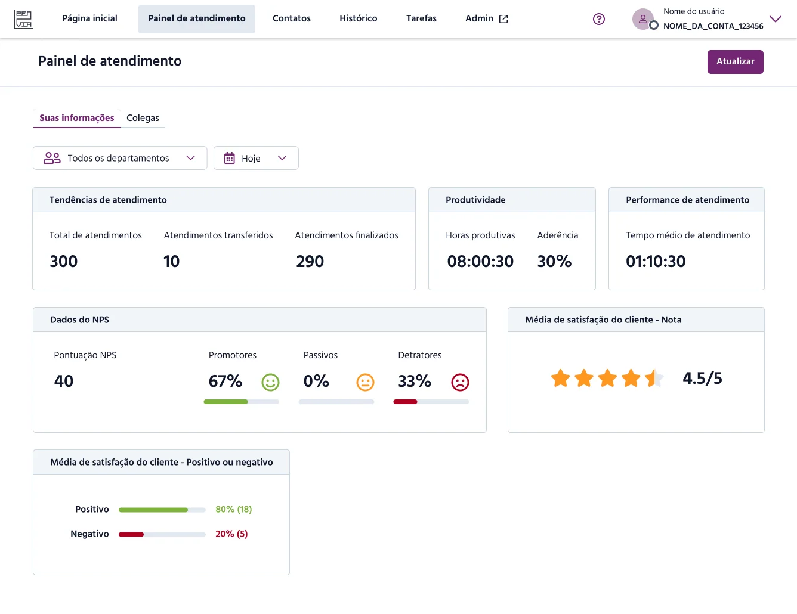
Research-led agent interface redesign, including accessibility and design-system evolution. Screens and examples come from the original case.
Context & Background
In this project, I redesigned the Live Chat platform focused on customer support at Zenvia, with an emphasis on improving interface accessibility and evolving the existing Design System.
Based on a robust discovery research phase, I applied UX Research methods such as user and stakeholder interviews, as well as benchmarking with similar products, to identify critical areas for improvement.
Based on data analysis and UX best practice heuristics, I prioritized the redesign of the agent platform, where the needs were more urgent. After improving the agent experience (those who directly interact with customers), I expanded the work to the admin platform, integrating the redesign of the dashboard — which you can check out here.
This project not only improved usability and accessibility, but also had a positive impact on performance and user satisfaction.

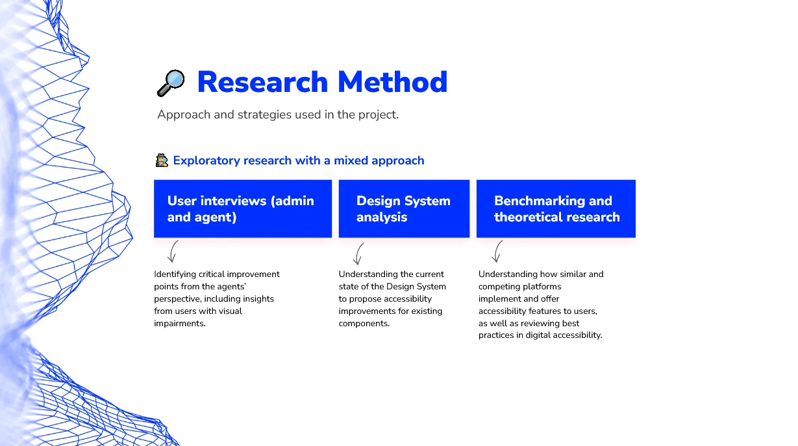
After the discovery phase, the interface improvements were implemented, prioritizing the Agent platform. The following elements were updated:
- Color palette
- Font (size and color)
- Buttons (size and color)
- Structure and composition of components on the screen
- Creation of new components tailored to the Zenvia Chat platform needs
- Features on the home screen such as the ability to increase or decrease font size in the chat, resize the chat area, hide the support queue, among others
- Textual content (UX writing)
Agent Platform Structure
To give a brief overview of what I worked on and where I applied new components focused on accessibility, the Agent platform includes the following screens and structure:
- Home: This is the main page and the one most used by agents, where they handle support tickets and chat with customers. This page includes various features that assist in daily tasks and improve the user’s workflow. I worked on the full redesign of all components and pages, including:
- Queue cards with information about the chat and customer;
- The chat interface itself, with multiple features like tags, canned responses, and more;
- Widgets that support agents in delivering high-quality service and boosting performance and productivity, including customer data, chat history, and more.
Conversation details and customer data

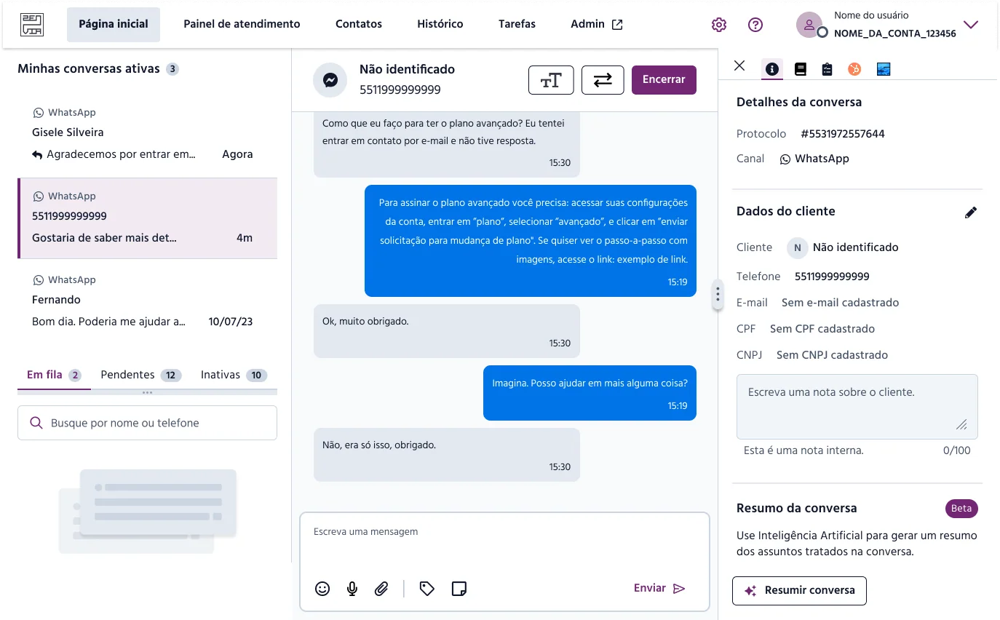
Conversation summary

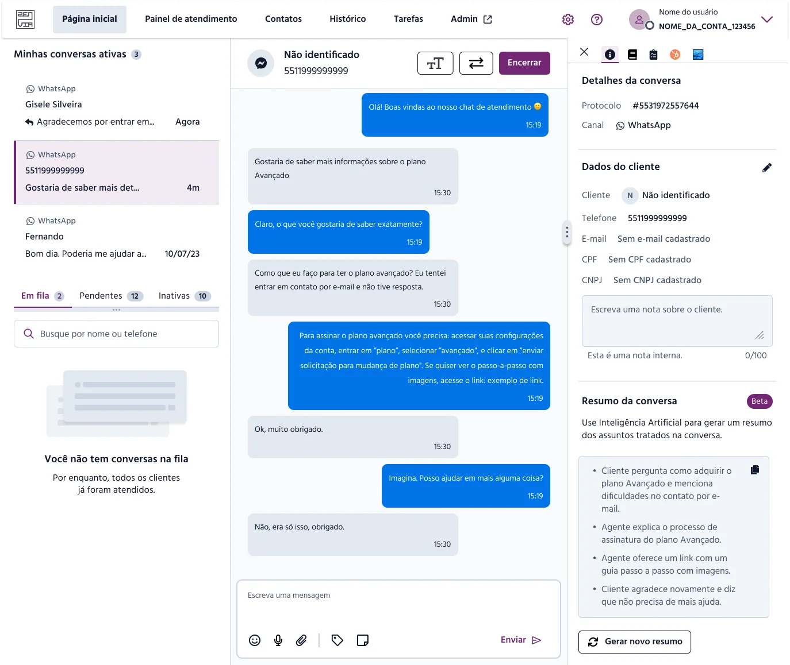
Customer information

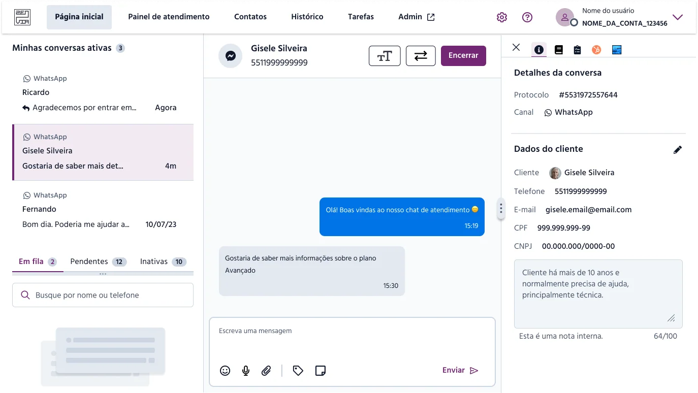
Support integration and ticket creation (PoC)

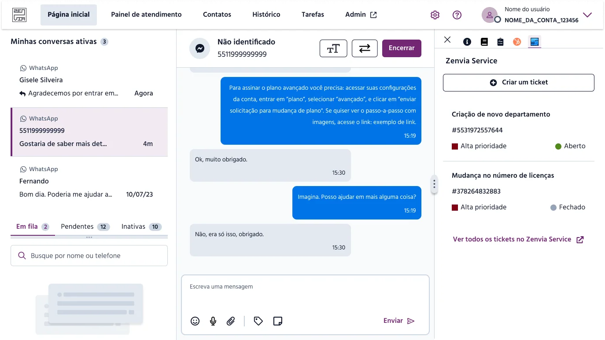
Chat history

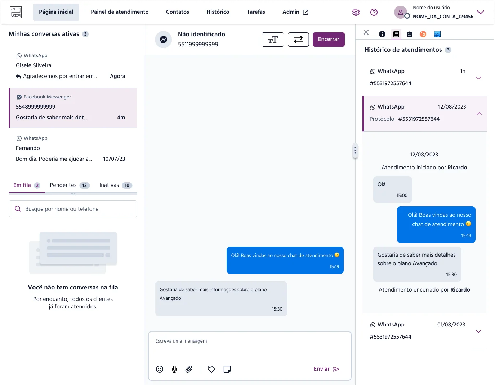
Tasks

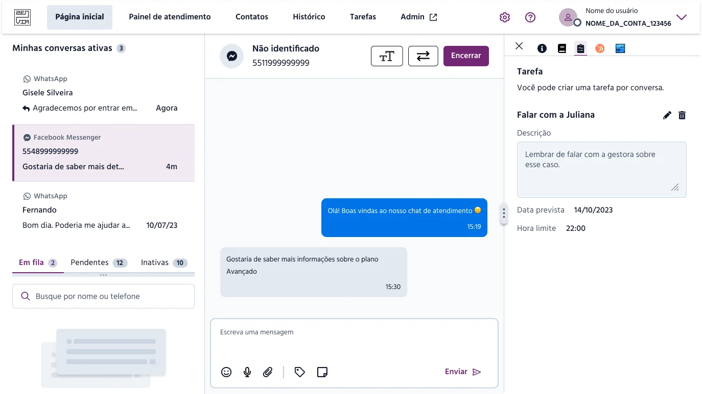
Widgets - Collapsed

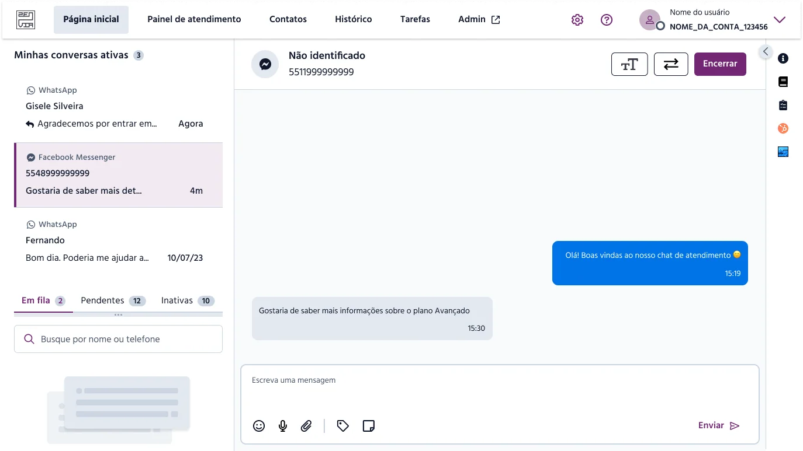
Font Resizing in the Chat

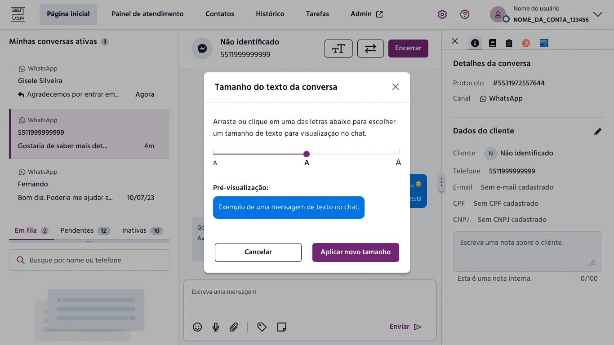
WhatsApp Message Templates

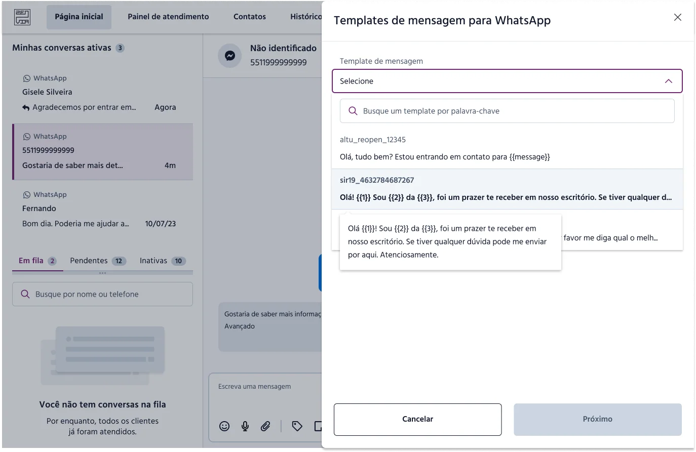

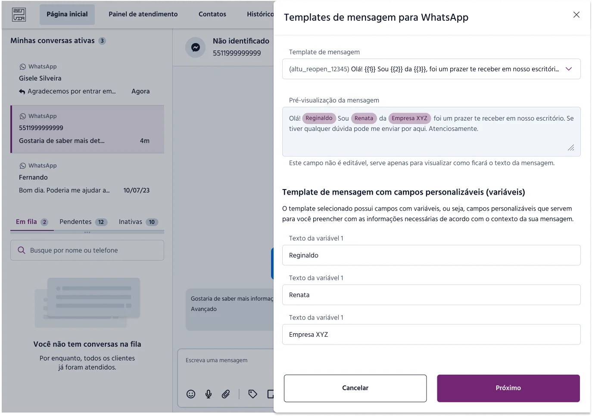
Internal Private Messages


Agent Dashboard: Displays individual metrics for agents, such as satisfaction scores, number of conversations handled, SLA, among others.


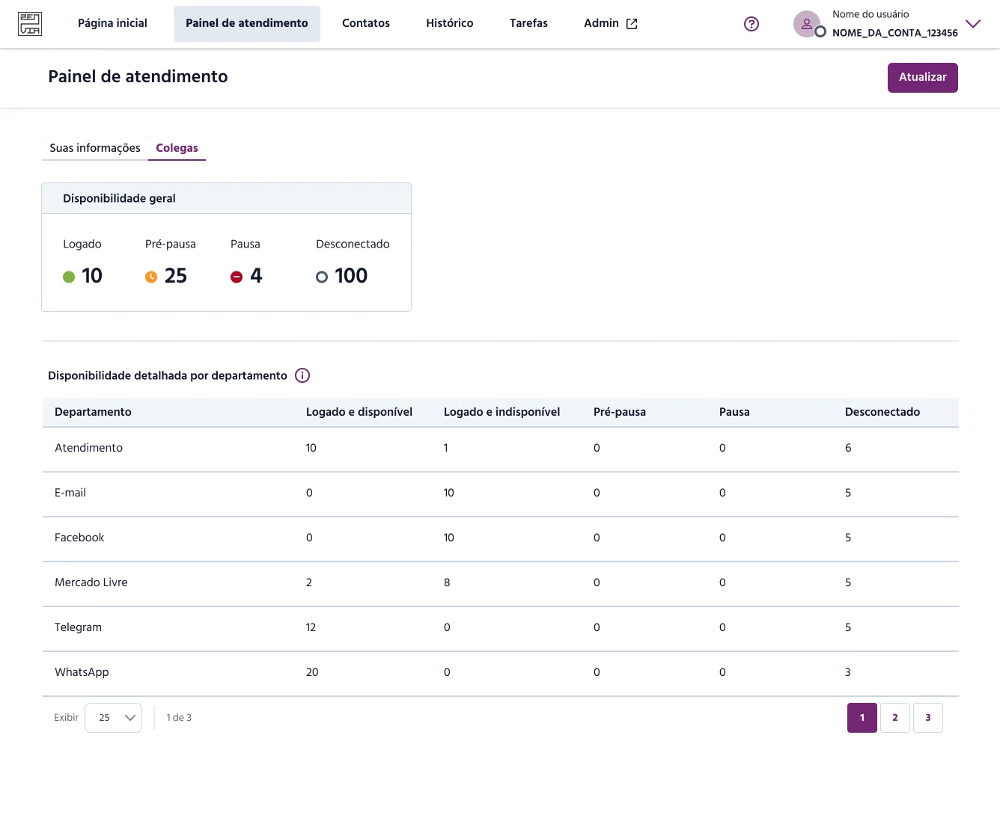
After implementing the improvements, I monitored user behavior through FullStory, a Product Analytics platform, and we also received positive feedback from customers regarding the updates.
Conclusion
This project was an important opportunity to enhance not only the visual design but also the overall usability and accessibility of a platform used daily by hundreds of agents. By combining discovery research, product analytics, and UX heuristics, I was able to identify key friction points and deliver meaningful, data-driven improvements that positively impacted both user experience and operational efficiency.
Moving forward, continuous monitoring and iteration will remain essential to keep refining the experience and ensuring it stays aligned with both user needs and business goals.